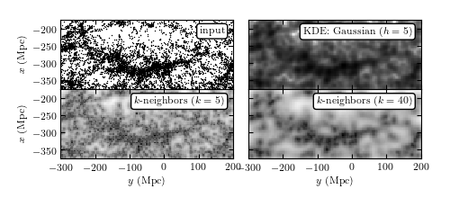

Great Wall Density¶
Comparison of density estimation techniques on the SDSS great wall

# Author: Jake VanderPlas <vanderplas@astro.washington.edu>
# License: BSD
# The figure produced by this code is published in the textbook
# "Statistics, Data Mining, and Machine Learning in Astronomy" (2013)
# For more information, see http://astroML.github.com
import numpy as np
from matplotlib import pyplot as plt
from matplotlib.colors import LogNorm
from scipy.spatial import cKDTree
from astroML.datasets import fetch_great_wall
from astroML.density_estimation import KDE, KNeighborsDensity
#------------------------------------------------------------
# Fetch the great wall data
X = fetch_great_wall()
#------------------------------------------------------------
# Create the grid on which to evaluate the results
Nx = 50
Ny = 125
xmin, xmax = (-375, -175)
ymin, ymax = (-300, 200)
#------------------------------------------------------------
# Evaluate for several models
Xgrid = np.vstack(map(np.ravel, np.meshgrid(np.linspace(xmin, xmax, Nx),
np.linspace(ymin, ymax, Ny)))).T
kde = KDE(metric='gaussian', h=5)
dens_KDE = kde.fit(X).eval(Xgrid).reshape((Ny, Nx))
knn5 = KNeighborsDensity('bayesian', 5)
dens_k5 = knn5.fit(X).eval(Xgrid).reshape((Ny, Nx))
knn40 = KNeighborsDensity('bayesian', 40)
dens_k40 = knn40.fit(X).eval(Xgrid).reshape((Ny, Nx))
#------------------------------------------------------------
# Plot the results
fig = plt.figure(figsize=(9, 4.0))
fig.subplots_adjust(left=0.1, right=0.95, bottom=0.14, top=0.9,
hspace=0.01, wspace=0.01)
# First plot: scatter the points
ax1 = plt.subplot(221, aspect='equal')
ax1.scatter(X[:, 1], X[:, 0], s=1, lw=0, c='k')
ax1.text(0.98, 0.95, "input", ha='right', va='top',
transform=ax1.transAxes, fontsize=12,
bbox=dict(boxstyle='round', ec='k', fc='w'))
# Second plot: KDE
ax2 = plt.subplot(222, aspect='equal')
ax2.imshow(dens_KDE.T, origin='lower', norm=LogNorm(),
extent=(ymin, ymax, xmin, xmax), cmap=plt.cm.binary)
ax2.text(0.98, 0.95, "KDE: gaussian $(h=5)$", ha='right', va='top',
transform=ax2.transAxes, fontsize=12,
bbox=dict(boxstyle='round', ec='k', fc='w'))
# Third plot: KNN, k=5
ax3 = plt.subplot(223, aspect='equal')
ax3.imshow(dens_k5.T, origin='lower', norm=LogNorm(),
extent=(ymin, ymax, xmin, xmax), cmap=plt.cm.binary)
ax3.text(0.98, 0.95, "KNN $(k=5)$", ha='right', va='top',
transform=ax3.transAxes, fontsize=12,
bbox=dict(boxstyle='round', ec='k', fc='w'))
# Fourth plot: KNN, k=40
ax4 = plt.subplot(224, aspect='equal')
ax4.imshow(dens_k40.T, origin='lower', norm=LogNorm(),
extent=(ymin, ymax, xmin, xmax), cmap=plt.cm.binary)
ax4.text(0.98, 0.95, "KNN $(k=40)$", ha='right', va='top',
transform=ax4.transAxes, fontsize=12,
bbox=dict(boxstyle='round', ec='k', fc='w'))
for ax in [ax1, ax2, ax3, ax4]:
ax.set_xlim(ymin, ymax - 0.01)
ax.set_ylim(xmin, xmax)
for ax in [ax1, ax2]:
ax.xaxis.set_major_formatter(plt.NullFormatter())
for ax in [ax3, ax4]:
ax.set_xlabel('$y$ (Mpc)')
for ax in [ax2, ax4]:
ax.yaxis.set_major_formatter(plt.NullFormatter())
for ax in [ax1, ax3]:
ax.set_ylabel('$x$ (Mpc)')
plt.show()